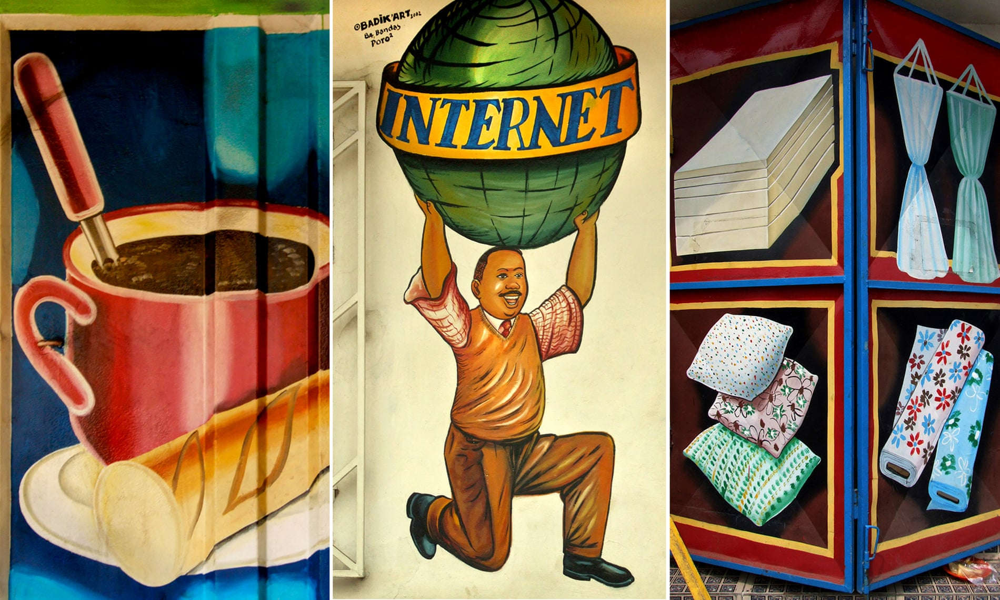
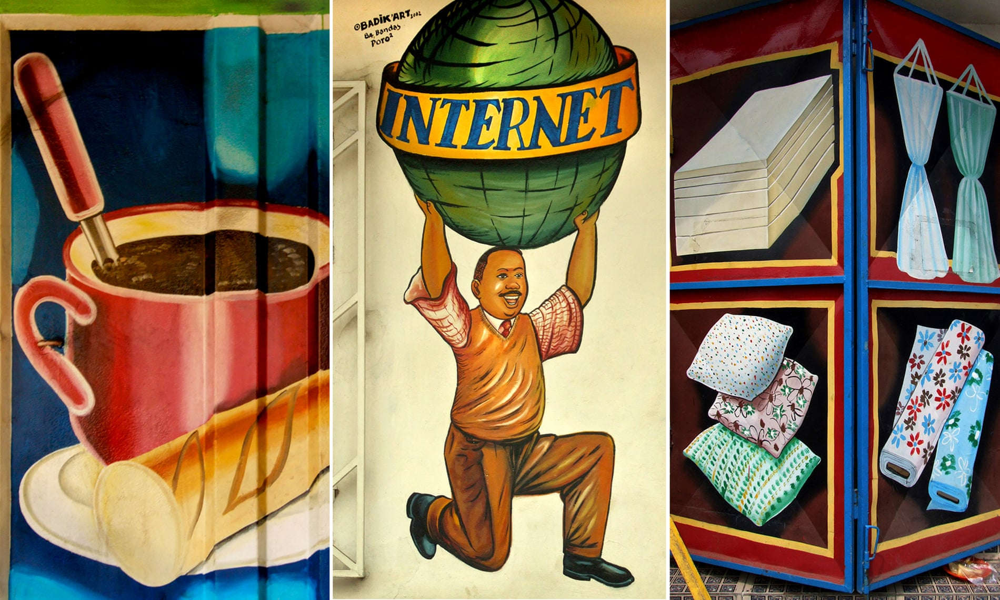
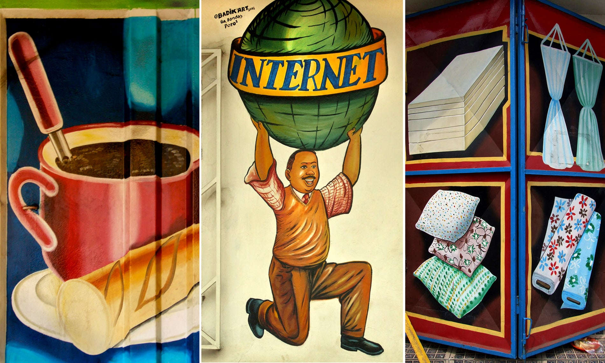

Congo-Brazzaville also known as the Republic of the Congo, is a country in Central Africa. It borders Central African Republic and Cameroon to the North, the Democratic Republic of the Congo to the east and south, Angola 's exclave of Cabinda to the south, Gabon to the west and Atlantic Ocean to the southwest. The capital of Congo-Brazzaville is Brazzaville. Official language is French, but Lingala and Kituba are also widely used. The currency used in Congo-Brazzaville is Central African CFA franc. 刚果布全称刚果共和国位于非洲中部。北接中非和喀麦隆，东和南接刚果金，南接安哥拉，西接加蓬，西南接大西洋。刚果布的首都是布拉柴维尔，官方语言是法语，且林加拉语和吉土巴语也是经常使用的。刚果布的通用货币是中非法郎。
Congo-Brazzaville is one of the largest producer of oil in the Gulf of Guinea, and apart from that, Congo-Brazzaville is one of the best tourist destinations, the scenery and landscapes are one of the best in the world. 刚果布是几内亚湾地区石油资源最丰盛的国家之一，也是旅游景点丰富的国家
The capital city of Congo(Brazzaville) also The Republic of the Congo is Brazzaville, Brazzaville is also the centre of the government and culture of Congo(Brazzaville). 刚果布的首都是布拉柴维尔，也是刚果布的政治和文化中心
